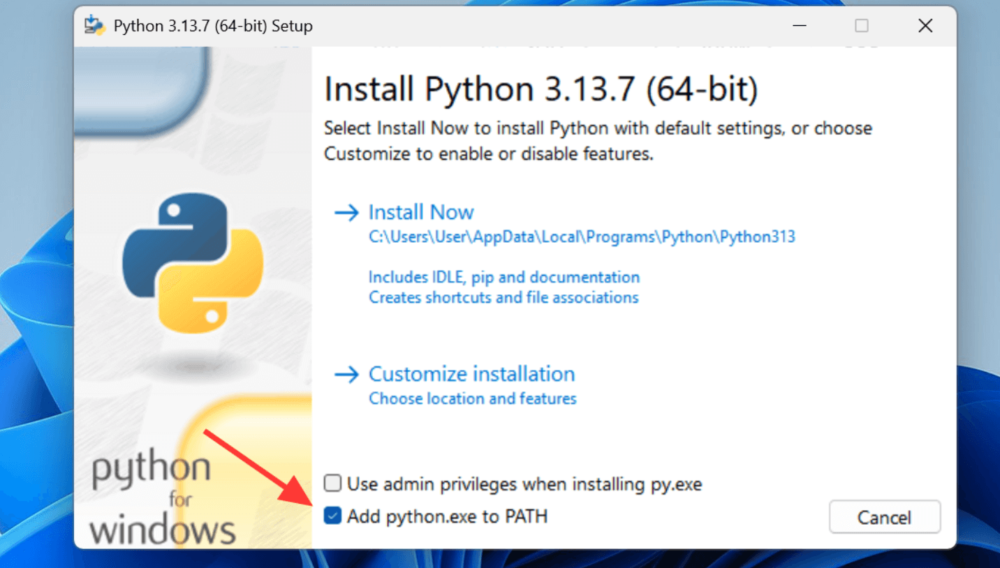
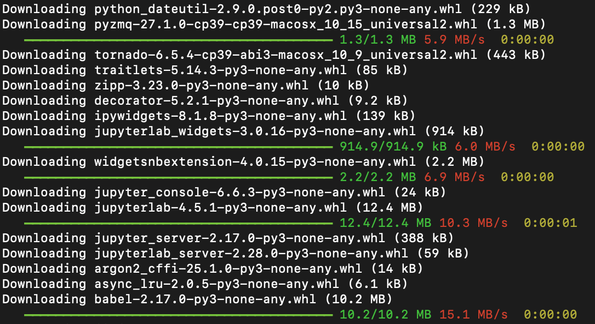
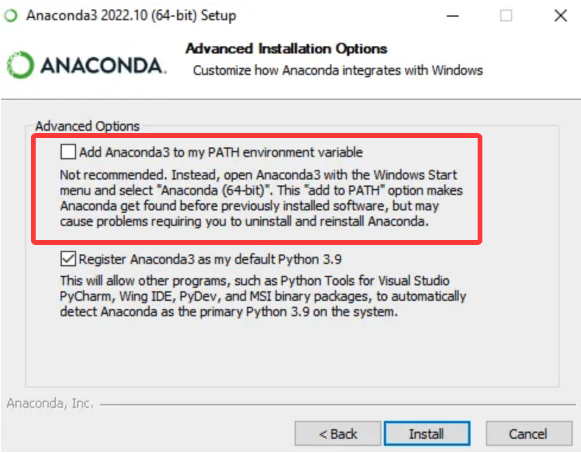
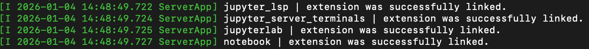
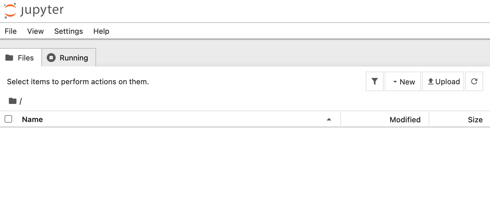

3. Jupyter Notebook 安装原文↗
Jupyter Notebook 是一个基于网页的交互式计算环境，我们可以把它想象成一个智能笔记本：
- 写笔记：像用 Word 一样，在里面记录文字、公式和图片。
- 写代码并运行：直接在单元格里编写 Python 代码，点击运行就能立刻看到结果。
- 展示结果：代码生成的图表、数据表格会直接显示在笔记本中。
Jupyter Notebook 特别适合用于数据清洗、统计分析、机器学习模型训练和可视化，因为你可以在一个文档中完成代码、结果和思路说明的全部工作。
安装前准备：Python 环境
Jupyter Notebook 本身是用 Python 写的，所以安装它的前提是你的电脑上已经安装了 Python 和包管理工具 pip。
1. 检查是否已安装 Python
打开你的命令行工具：
- Windows：在开始菜单搜索
cmd或命令提示符。 - macOS：打开
应用程序->实用工具->终端。 - Linux：使用快捷键
Ctrl + Alt + T打开终端。
在打开的命令行窗口中，输入以下命令并按回车：
python --version
或者
python3 --version
如果你看到类似 Python 3.8.10 这样的版本号输出（重点：版本号必须是 3.3 或以上），则说明已经安装了 Pyhton。
2. 检查是否已安装 pip
pip 是 Python 的软件安装管家，通常安装 Python 时会自带，检查命令如下：
pip --version
或者
pip3 --version
同样，如果看到版本信息，说明 pip 也已就位。
3. 如果未安装 Python
如果你的电脑还没有 Python，别担心，安装非常简单。
推荐方法：访问 Python 官方网站，下载最新的稳定版本（如 Python 3.11.x）。下载时，请务必勾选 Add Python to PATH 这个选项，这能省去后续手动配置环境变量的麻烦。然后像安装普通软件一样，一路点击下一步即可完成安装。

安装完成后，请重复上面的步骤 1 和 2，确认安装成功。
使用 pip 安装 Jupyter Notebook
确保 Python 和 pip 都准备好后，安装 Jupyter Notebook 只需要一行命令。
在你的命令行工具中，输入以下命令：
pip install jupyter
命令解析：
pip：调用 Python 的包管理工具。install：告诉 pip 你要安装东西。jupyter：要安装的软件包名称。
按下回车后，你会看到命令行开始下载并安装 Jupyter Notebook 及其相关组件。

注意：如果你使用的是 macOS 或 Linux，或者遇到权限问题，可能需要使用
pip3或在命令前加上sudo（macOS/Linux）：
pip3 install jupytersudo pip install jupyter（会要求输入电脑密码）如果安装慢，可以采用国内镜像：
pip3 install jupyter -i https://pypi.tuna.tsinghua.edu.cn/simple
安装成功验证： 安装完成后，可以输入以下命令查看 Jupyter 的版本，以确保安装无误：
jupyter --version
如果显示出版本信息，例如 jupyter core : 5.8.1，就表示安装成功了！
Selected Jupyter core packages... IPython : 8.18.1 ipykernel : 6.31.0 ipywidgets : 8.1.8 jupyter_client : 8.6.3 jupyter_core : 5.8.1 jupyter_server : 2.17.0
如果出现类似 zsh: command not found: jupyter 的问题，原因是 zsh 终端未加载 Jupyter 的环境变量，解决方案：
- 1、先验证 Jupyter 是否安装成功，输入 pip3 show jupyter，若显示版本信息说明安装成功。
- 2、执行 echo 'export PATH="$HOME/Library/Python/3.x/bin:$PATH"' >> ~/.zshrc（将 3.x 替换为实际的 Python 版本，如 3.9）。
- 3、输入 source ~/.zshrc 刷新配置，之后再输入 jupyter notebook 即可启动，若仍无效，可重启终端后重试。
使用 Anaconda 安装 Jupyter Notebook
Anaconda 是一款 Python 数据科学环境管理工具，内置了 Python 解释器、Jupyter Notebook 以及数据分析常用的第三方库（如 Pandas、NumPy），一步安装即可搞定所有依赖，无需额外配置。
使用 Anaconda 一键配齐所有环境，减少了手动安装库时可能遇到的版本冲突。
Anaconda 教程：https://www.runoob.com/python-qt/anaconda-tutorial.html
-
Anaconda 官网 ：https://anaconda.org/。
步骤
1、下载 Anaconda：访问 Anaconda 官网，下载适合你操作系统（Windows, macOS, Linux）的安装程序。

2、安装程序：运行下载好的 .exe 或 .pkg 文件。安装过程中建议勾选 Add Anaconda to my PATH （虽然官方不推荐，但对新手在命令行直接启动会方便很多）。

3、验证 Anaconda 安装：安装完成后，打开系统的命令提示符（Windows）或终端（macOS/Linux），输入命令：
conda --version
如果能显示版本号（如 conda 23.10.0），说明安装成功。
4. 启动 Jupyter Notebook：打开 Anaconda Navigator（Windows 可在开始菜单找到，macOS 可在启动台找到），界面中会显示 Jupyter Notebook，点击 Launch 按钮，等待几秒后会自动在默认浏览器中打开 Jupyter Notebook 界面。
也可以在命令提示符/终端中输入命令：jupyter notebook
按回车后，显示成功启动信息：

默认网页浏览器（如 Chrome， Firefox）会自动打开一个新页面，地址通常是 http://localhost:8888，这个就是 Jupyter Notebook 的仪表盘:
